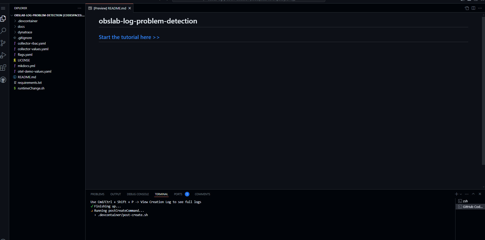
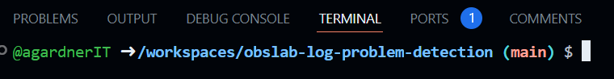

3. Installation Explained
Hurry up and wait#
Grab a Coffee
Everything is installing. This can take a while.
The OpenTelemetry demo and the Dynatrace collector will be installed automatically.
The Dynatrace details you provided during startup will be encrypted, stored in GitHub secrets and made available as environment variables (hint: printenv to see).
They will also be stored in a Kubernetes secret:
kubectl get secret/dynatrace-otelcol-dt-api-credentials -o yaml
Wait for System#

Wait here until the terminal prompt looks like this (your username will differ).

Wait for Application#
The Kubernetes cluster is available and the application is starting.
Wait for all pods to be Ready (can take up to 10mins)
kubectl wait --for condition=Ready pod --timeout=10m --all
The command will appear to hang until all pods are available.
When all pods are running, the output will look like this:
pod/dynatrace-collector-opentelemetry-collector-******-**** condition met
pod/my-otel-demo-accountingservice-******-**** condition met
pod/my-otel-demo-adservice-******-**** condition met
pod/my-otel-demo-cartservice-******-**** condition met
pod/my-otel-demo-checkoutservice-******-**** condition met
pod/my-otel-demo-currencyservice-******-**** condition met
pod/my-otel-demo-emailservice-******-**** condition met
pod/my-otel-demo-flagd-******-**** condition met
pod/my-otel-demo-frauddetectionservice-******-**** condition met
pod/my-otel-demo-frontend-******-**** condition met
pod/my-otel-demo-frontendproxy-******-**** condition met
pod/my-otel-demo-imageprovider-******-**** condition met
pod/my-otel-demo-kafka-******-**** condition met
pod/my-otel-demo-loadgenerator-******-**** condition met
pod/my-otel-demo-paymentservice-******-**** condition met
pod/my-otel-demo-productcatalogservice-******-**** condition met
pod/my-otel-demo-prometheus-server-******-**** condition met
pod/my-otel-demo-quoteservice-******-**** condition met
pod/my-otel-demo-recommendationservice-******-**** condition met
pod/my-otel-demo-shippingservice-******-**** condition met
pod/my-otel-demo-valkey-******-**** condition met